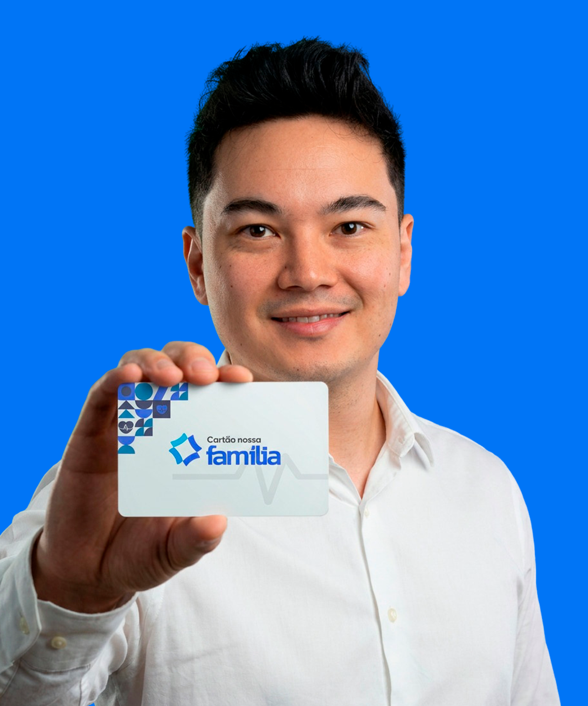
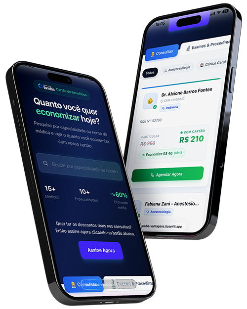
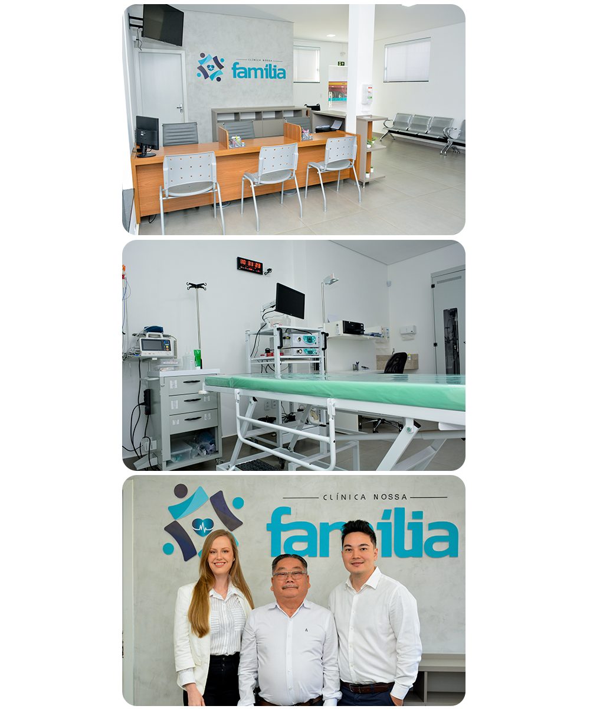

Com o Cartão Nossa Família, você tem acesso a consultas, exames e outros benefícios em saúde por condições diferenciadas — além de vantagens que continuam mesmo quando você não está no consultório.
Sem burocracia. Conheça o cartão, escolha sua modalidade e comece a aproveitar.
*A consulta com Clínico Geral e demais benefícios estão sujeitos às condições da modalidade contratada.

O Cartão Nossa Família foi criado para uma coisa simples: fazer você gastar menos para cuidar da sua saúde.
Você paga uma assinatura e passa a ter acesso a uma série de benefícios, descontos e condições especiais em consultas, exames, procedimentos e serviços parceiros.
Uma consulta particular pode custar R$400, R$500 ou mais. Um exame que você precisa fazer pode acabar sendo adiado porque não estava no orçamento. E aquele acompanhamento que deveria acontecer agora fica para depois.
Não porque você não queira se cuidar. Porque, muitas vezes, o preço pesa.
Escolha a modalidade que faz mais sentido para você, sua família ou sua empresa.
Depois da adesão, você passa a ter acesso aos benefícios e condições previstas na sua modalidade.
Escolha o médico, exame ou parceiro disponível e aproveite a condição especial do seu cartão.
E tem uma diferença importante: você não precisa esperar uma emergência para fazer o cartão valer a pena.
Use para uma consulta, um exame, uma compra no Clube de Benefícios ou outro serviço disponível.
O Cartão Nossa Família dá acesso a uma rede de profissionais e serviços, com mais de 15 médicos disponíveis no catálogo.
Para aquela consulta que você vem adiando ou para começar uma investigação.
Acompanhamento e cuidados com a saúde da mulher.
Avaliação relacionada a metabolismo, hormônios e outras condições.
Cuidados com a saúde masculina e do sistema urinário.
Acompanhamento especializado em saúde mental.
Avaliação de dores, lesões e problemas do sistema musculoesquelético.
Também fazem parte do catálogo profissionais e serviços em outras áreas da saúde. Consulte a disponibilidade atualizada antes do agendamento.
Ver Catálogo CompletoVocê entra por causa da economia em saúde. Mas quando conhece tudo o que está disponível, percebe que o cartão entrega muito mais.
Acesso a consulta com Clínico Geral, conforme as condições da modalidade.
Condições diferenciadas em consultas médicas disponíveis no catálogo.
Economize também na realização de exames laboratoriais e outros serviços.
Conte com condições diferenciadas de atendimento e agendamento.
Benefícios em estabelecimentos parceiros locais, como Laboratórios, SPA e academia.
Economize em redes como Magalu, Riachuelo, Amazon, Netshoes e Pague Menos.
Assistência funeral individual de até R$ 7.000, conforme a modalidade.
Veja na prática quanto você economiza utilizando o cartão.
Com o Cartão Nossa Família, você não precisa ficar no achismo. Nosso aplicativo mostra a diferença entre o valor normal e o valor que você conseguiu.

Não faz sentido assinar um cartão de benefícios e lembrar dele somente quando alguma coisa dá errado. O Cartão Nossa Família foi pensado para fazer parte da sua rotina.
Uma consulta que você estava adiando. Um exame que precisa ser feito. Uma compra em parceiro. Quanto mais você conhece, mais possibilidades encontra para economizar.
O Cartão Nossa Família nasceu conectado a uma estrutura de saúde que já atende a nossa região.
A Clínica Nossa Família oferece um espaço completo para consultas, exames e diferentes serviços de saúde. É uma das principais estruturas onde o associado pode utilizar seus benefícios.
Uma estrutura de saúde próxima de você, com um cartão pensado para tornar esse acesso mais simples e econômico.
Conheça a Clínica
Menos do que você provavelmente imagina.
Para quem quer cuidar da própria saúde e ter acesso aos benefícios.
12 mensalidades + taxa de adesão com carência de 30 dias para consultas e exames
Quero o IndividualIdeal para família com cônjuge e filhos, modalidade [1 titular e 3 dependentes].
12 mensalidades + taxa de adesão com carência de 30 dias para consultas e exames
Quero o Familiar
Ideal para amigos, familiares ou colegas, modalidade [1 titular e
3 dependentes].
Adicione mais por: R$ 9,90
12 mensalidades + taxa de adesão com carência de 30 dias para consultas e exames
Quero o CompartilhadoTodos os planos possuem taxa de adesão equivalente a uma mensalidade. Consulte as condições, benefícios, carências e regras de cada modalidade antes da contratação.
Dúvidas, fale com nosso consultor.Não. O Cartão Nossa Família é um clube de benefícios em saúde. Ele oferece acesso a consultas, exames e serviços com condições diferenciadas, conforme a modalidade e os parceiros disponíveis.
A utilização depende do benefício. Exames possuem carência de 30 dias. Consulte as regras da modalidade contratada antes de utilizar.
Não. O cartão oferece benefícios e condições especiais. A consulta é realizada pelo valor estabelecido para o associado, conforme a condição disponível.
Não necessariamente. O cartão físico é opcional e não é enviado automaticamente. Caso queira receber, é necessário solicitar.
Não. Os benefícios são válidos para os profissionais, serviços e parceiros disponíveis no catálogo/rede do Cartão Nossa Família.
Sim. O cartão oferece descontos em exames disponíveis na rede, conforme as condições vigentes.
Sim. O Clube de Benefícios permite acessar vantagens em grandes redes nacionais e outros parceiros participantes.
Por meio do aplicativo de economia, onde o associado consegue acompanhar a diferença de valores e sua economia.
Ou pode começar a cuidar da sua saúde de uma forma mais inteligente. O Cartão Nossa Família foi criado para colocar mais acesso e mais economia na sua rotina.
Conheça a modalidade que faz sentido para você.
Falar com consultorAtendimento pelo WhatsApp. Tire suas dúvidas antes de contratar.